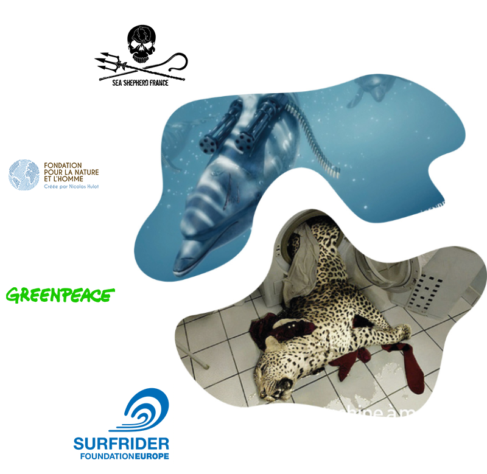

Brief
To make a brand content campaign for 14 months (from June 2019 to September 2020 to sensitize the French population on the decline of biodiversity).
WWF France
Observations
Today we are all drown of alarmist messages about environment state through the media. Furthermore, shocked visual supports generate pessimism and restrict people believing in the cause for which they fight. Thus, to act they need optimism.
